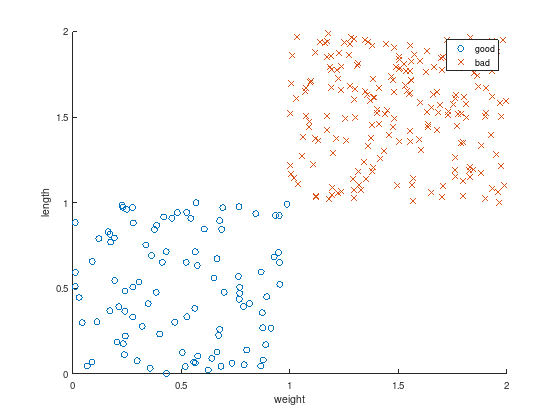
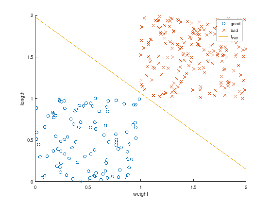

Contents
LP02¶
Linear classification¶
See also [BV04] (chapter 8.6).
Creation of labeled measurements (“training data”)¶
Create \(m\) random data pairs \((w_i, l_i)\) of weights and lengths.
m = 300;
w = rand(m,1); % weight
l = rand(m,1); % length
Split the measurements into two sets, such that a data pair \((w_i, l_i)\) is considered as “good” for \(1 \leq i \leq k \leq m\) and “bad” otherwise.
k = m / 3;
w = [w(1:k); w((k+1):m) + 1];
l = [l(1:k); l((k+1):m) + 1];
Plot the resulting data to discriminate.
axis equal
scatter(w(1:k), l(1:k), 'o'); % good
hold on;
scatter(w(k+1:m), l(k+1:m), 'x'); % bad
xlabel('weight');
ylabel('length');
legend ({'good', 'bad'});

Classification¶
Looking at the figure above, it seems possible to find a seperating hyperplane. That is a linear function with unknown coefficients \(x_0\), \(x_1\), and \(x_2\)
to seperate
the “good” blue cicles: \(f_{\text{linear}}(w_i,l_i) \leq -1\) for \(1 \leq i \leq k \leq m\) and
the “bad” red crosses: \(f_{\text{linear}}(w_i,l_i) \geq 1\) for \(k < i \leq m\).
Note: \(w_i\) and \(l_i\) are the variables of \(f_{\text{linear}}(w_i,l_i)\)!
Feasibility problem as Linear Program (LP)¶
This classification problem can be formulated as LP:
c = [0 0 0];
A = [ ones(k, 1), w(1:k), l(1:k); ...
-ones(m-k,1), -w(k+1:m), -l(k+1:m) ];
b = -ones(m,1);
Aeq = []; % No equality constraints
beq = [];
lb = -inf(3,1); % x0 to x2 are free variables
ub = inf(3,1);
CTYPE = repmat ('U', m, 1); % Octave: A(i,:)*x <= b(i)
x0 = []; % default start value
%[x,~,exitflag] = linprog(c,A,b,Aeq,beq,lb,ub,x0); % Matlab: exitflag=1 success
[x,~,exitflag] = glpk(c,A,b,lb,ub,CTYPE) % Octave: exitflag=0 success
x =
-23.712
10.969
11.999
exitflag = 0
The computed solution \(x\) are the sought coefficients for \(f_{\text{linear}}(w_i,l_i)\). Plotting the resulting function shows that it perfectly discriminates the measurements (test data).
axis equal
scatter(w(1:k), l(1:k), 'o'); % good
hold on;
scatter(w(k+1:m), l(k+1:m), 'x'); % bad
f_quad = @(w,l) 1.*x(1) + w.*x(2) + l.*x(3);
ezplot (f_quad, [0,2,0,2]);
title ('');
xlabel('weight');
ylabel('length');
legend ({'good', 'bad', 'f_{linear}'});

After this “training” the linear discrimination function \(f_{\text{linear}}(w_i,l_i)\) can be used to classify other data pairs as well.